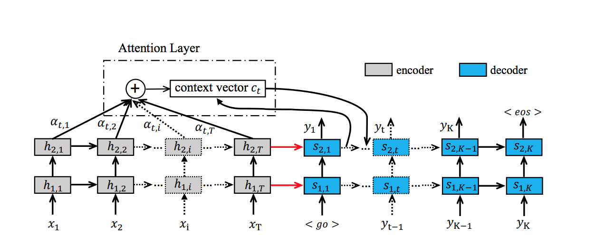

|
Hong-Yu ZhouPhD CandidateDepartment of Computer Science Advisor: Yizhou Yu Email Address: whuzhouhongyu at gmail dot com |
Bio
- From Sep. 2020, I will become a PhD candidate at Department of Computer Science, University of Hong Kong. My advisor is Prof. Yizhou Yu. My research interest is Medical Image Analysis.
- From Jul. 2018 to Jul. 2020, I was a senior researcher at Tencent focusing on MedicalAI applications. My group leader is Dr. Yefeng Zheng.
- I got my master degree from in LAMDA Group at Nanjing University in 2018, advised by Prof. Jianxin Wu. Before that, I received my bachelor degree from Wuhan University.
Recent News
- [2020/07] Three papers have been accepted to MICCAI 2020.
- [2020/02] Our team has won 4 championships in 4 different global competitions in 2019!
- [2019/12] Second place in ODIR 2019, held by Peking University.
- [2019/11] First places in all three tracks in 2019 MICCAI AGE Challenge.
- [2019/10] We won the championship in AASCE 2019, held by MICCAI 2019. The proposed algorithm is able to estimate the spinal curvature in Adolescent Idiopathic Scoliosis (AIS) accurately. Press coverage: 中华网 科技讯 中国好医生网 凤凰网.
- [2019/06] We won the first place in Segthor 2019 Challenge, held by ISBI 2019. The proposed approach aims at segmenting organs at risk segmentation in Computed Tomography (CT) images. We achieved the highest Dice scores on Esophagus, Heart and Trachea. Press coverage: 腾讯科技 机器之心 环球网 量子位 搜狐网.
- [2019/05] Our team won the first place in AI4Health Challeng, held by Thales group which provides solutions for over 50% of worldwide radiology examinations. In this challenge, we proposed a novel methodology to detect key points in X-rays very accurately (the mean error is smaller than 0.3 pixel). Press coverage: 中国经济网 环球网 腾讯新闻 极客公园 东方网.
Projects and Publications
| Hong-Yu Zhou*, Shuang Yu*, Cheng Bian, Yifan Hu, Kai Ma and Yefeng Zheng Comparing to Learn: Surpassing ImageNet Pretraining on Radiographs By Comparing Image Representations MICCAI 2020 [PDF][code] | |
| Hong-Yu Zhou*, Shuang Yu*, Kai Ma, Cheng Bian, Chunyan Chu, Hanruo Liu and Yefeng Zheng Difficulty-aware Glaucoma Classification with Multi-Rater Consensus Modeling MICCAI 2020 | |
| Munan Ning, Cheng Bian, Donghuan Lu, Hong-Yu Zhou, Shuang Yu, Chenglang Yuan, Yang Guo, Yaohua Wang, Kai Ma and Yefeng Zheng A Macro-Micro Weakly-supervised Framework for AS-OCT Tissue Segmentation MICCAI 2020 | |
| Hong-Yu Zhou, Avital Oliver, Jianxin Wu, and Yefeng Zheng When Semi-Supervised Learning Meets Transfer Learning: Training Strategies, Models and Datasets arXiv, 2018 [PDF][code] | |
 |
Jian-Hao Luo, Hao Zhang, Hong-Yu Zhou, Chen-Wei Xie, Jianxin Wu, and Weiyao Lin ThiNet: Pruning CNN Filters for a Thinner Net IEEE Transactions on Pattern Analysis and Machine Intelligence (TPAMI) [PDF] [Project] |
| Chen-Wei Xie, Hong-Yu Zhou, and Jianxin Wu Vortex Pooling: Improving Context Representation in Semantic Segmentation arXiv:1804.06242, 2018 [PDF] | |
 |
Bin-Bin Gao, Hong-Yu Zhou, Jianxin Wu, and Xin Geng Age Estimation Using Expectation of Label Distribution Learning The 27th International Joint Conference on Artificial Intelligence and the 23rd European Conference on Artificial Intelligence (IJCAI-ECAI), 2018 [Project] |
|  | Wen-Hao Zheng, Hong-Yu Zhou, Ming Li, and Jianxin Wu Code Attention: Translating Code to Comments by Exploiting Domain Features Frontiers of Computer Science [PDF] |
 |
Hong-Yu Zhou, Bin-Bin Gao, and Jianxin Wu Adaptive Feeding: Achieving Fast and Accurate Detections by Adaptively Combining Object Detectors The IEEE International Conference on Computer Vision (ICCV), 2017 [PDF][Project][Demo] |
 |
Hong-Yu Zhou, Bin-Bin Gao, and Jianxin Wu Sunrise or Sunset: Selective Comparison Learning for Subtle Attribute Recognition The 28th British Machine Vision Conference (BMVC), 2017 [PDF][Dataset (2.12G)][Project] |
 |
Hong-Yu Zhou and Jianxin Wu Content-Based Image Recovery The 2017 Pacific-Rim Conference on Multimedia (PCM), 2017 [PDF] |
Academic activities
- Conference reviewer for NIPS, AAAI, MICCAI, CVPR.
- Journal reviewer for TMI, JBHI, TKDE, MIA.